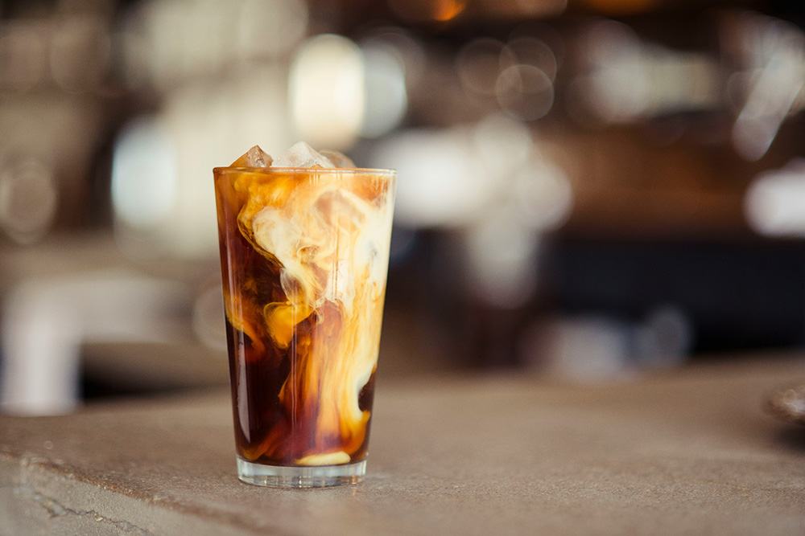

What is Iced Latte?

Iced Latte vs Iced Coffee | What Molly MadeAn iced latte is a creamy, cold coffee drink made with shots of espresso, cold milk, and ice, offering a smoother, milder taste than iced coffee because of the milk's richness, often enhanced with sweeteners or flavorings like vanilla or caramel. It's the chilled version of a traditional hot latte, combining rich espresso with cold milk for a balanced, refreshing beverage.